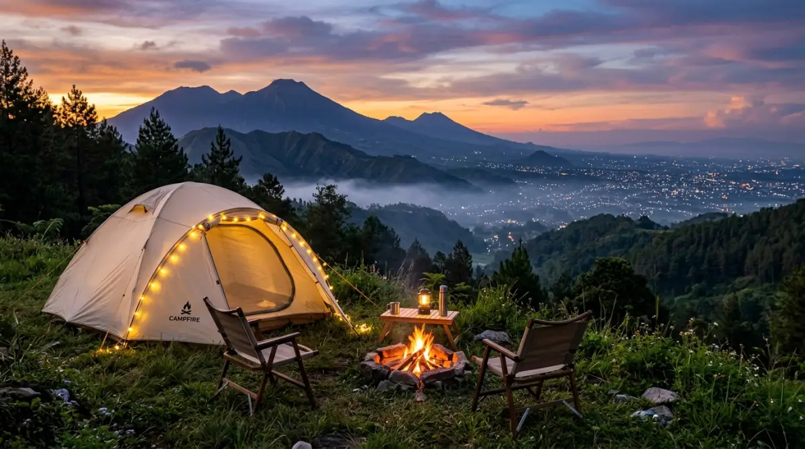
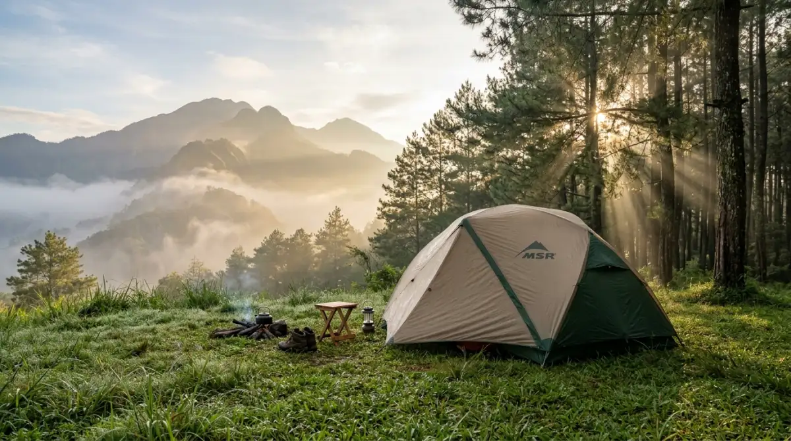

Tenda dome camping ala ala di kawasan pegunungan Batu Malang — suasana santai dan estetik.Camping ala ala Batu Malang adalah pengalaman berkemah santai dan estetik di kawasan pegunungan Kota Batu, Malang, yang menawarkan suasana alam segar tanpa harus menjadi pendaki berpengalaman. Cocok untuk pemula, keluarga, maupun pasangan yang ingin menikmati alam dengan nyaman.
- Apa Itu Camping Ala Ala dan Mengapa Populer di Batu Malang?
- Di Mana Saja Lokasi Camping Ala Ala Terbaik di Batu Malang?
- Berapa Biaya Camping Ala Ala di Batu Malang?
- Apa Saja yang Perlu Dipersiapkan untuk Camping Ala Ala?
- Kapan Waktu Terbaik Camping Ala Ala di Batu Malang?
- Tips Camping Ala Ala Batu Malang untuk Pemula
- Apakah Camping Ala Ala Cocok untuk Keluarga dengan Anak?
- Perbedaan Camping Ala Ala dan Glamping di Batu Malang
- FAQ
Apa Itu Camping Ala Ala dan Mengapa Populer di Batu Malang?
Camping ala ala adalah gaya berkemah santai yang mengutamakan estetika, kenyamanan, dan pengalaman visual — berbeda dari pendakian teknis yang membutuhkan fisik prima. Tren ini meledak di kalangan generasi muda Indonesia sejak 2022 dan terus tumbuh hingga 2026.
Kota Batu di Malang menjadi salah satu destinasi camping ala ala paling populer di Jawa Timur karena kombinasi uniknya: udara dingin pegunungan, pemandangan Gunung Arjuno, Gunung Welirang, dan Gunung Kawi, serta akses mudah dari Kota Malang yang hanya berjarak 15–20 menit perjalanan.
Menurut data Dinas Pariwisata Kota Batu tahun 2025, kunjungan wisata alam berbasis berkemah meningkat 38 persen dibandingkan tahun 2023. Kenaikan ini sebagian besar didorong oleh konten media sosial yang menampilkan tenda dome estetik, kabut pagi, dan langit bintang.
Camping ala ala bukan soal survival — ini soal menciptakan momen yang berkesan dengan perlengkapan minimal namun tetap nyaman. Banyak lokasi di Batu bahkan menyediakan paket all-in dengan tenda sudah terpasang, lampu hias, dan sarapan pagi.
Di Mana Saja Lokasi Camping Ala Ala Terbaik di Batu Malang?
Kawasan Batu Malang memiliki beragam pilihan lokasi camping ala ala yang tersebar di lereng gunung dan lembah hijau. Berikut area utama yang paling banyak dikunjungi.
Kawasan Selecta dan Songgoriti
Area Selecta dan Songgoriti di sisi barat Kota Batu menawarkan camping ground dengan pemandangan perkebunan apel dan hutan pinus. Ketinggian sekitar 1.000–1.200 mdpl memberikan suhu malam antara 15–18 derajat Celsius — dingin namun tidak ekstrem untuk pemula. Beberapa pengelola di kawasan ini menyewakan tenda dome estetik lengkap dengan lampu tumblr dan alas karpet.
Kawasan Coban dan Air Terjun
Di sekitar kawasan air terjun seperti Coban Rondo dan Coban Talun terdapat camping ground yang populer karena suara gemericik air dan udara lembap yang segar. Lokasi ini cocok untuk pasangan dan rombongan kecil yang menginginkan nuansa romantis di alam. Jarak dari pusat Kota Batu berkisar 8–15 kilometer.

Panorama lokasi camping ala ala di kawasan Batu Malang — pemandangan pegunungan yang memukau.Lereng Gunung Panderman
Camping di kaki Gunung Panderman menawarkan pengalaman lebih dekat dengan nuansa pendakian, namun tetap bisa dinikmati tanpa harus sampai ke puncak. Beberapa basecamp menyediakan area camping ala ala dengan view kota Malang pada malam hari yang sangat fotogenik.
Kawasan Pujon dan Ngantang
Jika ingin suasana lebih tenang dan jauh dari keramaian, kawasan Pujon dan Ngantang di barat Batu menawarkan camping ground di tepi danau dan perbukitan. Pemandangan Ranu Grati dan hamparan sawah hijau menjadi latar belakang yang khas dan jarang ditemukan di tempat lain.
Berapa Biaya Camping Ala Ala di Batu Malang?
Biaya camping ala ala di Batu Malang sangat bervariasi tergantung fasilitas, lokasi, dan paket yang dipilih. Secara umum, perkiraan biaya adalah sebagai berikut:
- Tiket masuk camping ground: Rp10.000–Rp30.000 per orang
- Sewa tenda dome (sudah terpasang): Rp100.000–Rp200.000 per malam
- Sewa sleeping bag: Rp20.000–Rp50.000 per malam
- Paket glamping all-in (tenda + makan + aktivitas): Rp250.000–Rp500.000 per orang per malam
- Parkir kendaraan: Rp5.000–Rp20.000
Untuk rombongan 4–6 orang dengan membawa perlengkapan sendiri, biaya total bisa ditekan hingga Rp50.000–Rp80.000 per orang per malam. Sementara untuk pasangan yang memilih paket glamping estetik, anggaran Rp300.000–Rp500.000 per orang sudah mencakup pengalaman lengkap termasuk dekorasi tenda dan sarapan.
Apa Saja yang Perlu Dipersiapkan untuk Camping Ala Ala?
Persiapan camping ala ala Batu Malang tidak serumit pendakian gunung, namun tetap membutuhkan perhatian khusus agar pengalaman nyaman dan aman.
Perlengkapan Wajib
Perlengkapan dasar yang perlu dibawa meliputi jaket tebal atau windbreaker (suhu malam Batu bisa turun hingga 12–15 derajat Celsius), sleeping bag atau selimut ekstra, senter atau headlamp, alas tidur atau matras jika tidak disewakan, dan pakaian ganti secukupnya.
Perlengkapan Estetik dan Dokumentasi
Untuk memaksimalkan momen camping ala ala, banyak camper membawa lampu hias portable, kamera atau tripod untuk foto langit malam, tumblr atau termos air panas, dan snack estetik untuk konten. Perlengkapan ini memang tidak wajib, namun menjadi bagian dari pengalaman camping ala ala yang membedakannya dari berkemah biasa.
Persiapan Makanan
Sebagian besar lokasi camping di Batu memiliki warung atau pedagang makanan di sekitarnya. Namun membawa nasi bungkus, mi instan, atau bahan bakar untuk memasak sendiri akan membuat pengalaman lebih mandiri dan hemat. Jangan lupa membawa air minum yang cukup.
Kapan Waktu Terbaik Camping Ala Ala di Batu Malang?
Waktu terbaik untuk camping ala ala di Batu Malang adalah antara bulan April hingga Oktober, bertepatan dengan musim kemarau di Jawa Timur. Pada periode ini, langit lebih cerah, risiko hujan lebih rendah, dan pemandangan bintang pada malam hari jauh lebih optimal.
Hindari berkemah pada puncak musim hujan antara Desember hingga Februari karena potensi tanah longsor, angin kencang, dan genangan air di camping ground meningkat signifikan. Jika terpaksa berkemah di musim hujan, pastikan lokasi sudah terkonfirmasi aman oleh pengelola setempat.
Akhir pekan dan musim liburan sekolah adalah waktu tersibuk. Pemesanan tempat lebih awal sangat disarankan, terutama untuk paket glamping yang kapasitasnya terbatas.
Tips Camping Ala Ala Batu Malang untuk Pemula
Beberapa tips praktis berikut akan membantu pengalaman pertama camping ala ala di Batu Malang berjalan lebih lancar.
Pertama, pilih lokasi yang sudah memiliki fasilitas toilet dan air bersih — tidak semua camping ground menyediakannya. Konfirmasi ke pengelola sebelum berangkat. Kedua, datang sebelum sore hari untuk mendapatkan posisi tenda terbaik dengan view terbaik. Ketiga, patuhi aturan kebersihan — bawa kantong sampah sendiri dan jangan meninggalkan sampah di lokasi. Keempat, matikan api unggun sepenuhnya sebelum tidur dan pastikan tidak ada bara yang masih menyala.
Untuk keamanan, simpan makanan dalam wadah tertutup untuk menghindari hewan liar, beri tahu anggota keluarga atau teman tentang lokasi berkemah, dan simpan nomor kontak pengelola camping ground.
Apakah Camping Ala Ala Cocok untuk Keluarga dengan Anak?
Camping ala ala di Batu Malang sangat cocok untuk keluarga dengan anak, asalkan memilih lokasi yang tepat. Kawasan dengan akses kendaraan langsung ke camping ground, toilet bersih, dan pengelola aktif adalah prioritas untuk keluarga dengan anak kecil.
Beberapa lokasi di Batu bahkan menyediakan aktivitas tambahan seperti outbound, flying fox, dan edukasi pertanian apel yang menarik untuk anak-anak. Hal ini menjadikan camping ala ala sebagai paket wisata keluarga yang komprehensif, bukan sekadar menginap di tenda.
Perbedaan Camping Ala Ala dan Glamping di Batu Malang
Camping ala ala dan glamping sering kali tertukar pengertiannya. Camping ala ala merujuk pada berkemah mandiri dengan sentuhan estetik menggunakan perlengkapan pribadi, sementara glamping (glamorous camping) biasanya mengacu pada paket yang sudah disiapkan pengelola dengan tenda premium, kasur, listrik, dan layanan penuh.
Dari segi biaya, camping ala ala mandiri jauh lebih hemat. Dari segi kenyamanan dan kepraktisan, glamping menawarkan pengalaman lebih mulus tanpa perlu merepotkan diri dengan setup tenda. Keduanya sama-sama valid tergantung preferensi dan anggaran masing-masing pengunjung.
Camping ala ala Batu Malang adalah pilihan wisata alam yang sangat layak untuk semua kalangan — dari pasangan yang mencari momen romantis, keluarga yang ingin liburan berbeda, hingga rombongan teman yang ingin pengalaman seru bersama. Dengan biaya yang fleksibel, lokasi yang beragam, dan suasana alam yang autentik, Kota Batu menawarkan salah satu pengalaman camping ala ala terbaik di Jawa Timur.
Langkah pertama: tentukan budget dan jenis pengalaman yang diinginkan — mandiri atau glamping. Langkah kedua: pilih lokasi sesuai preferensi view dan fasilitas. Langkah ketiga: reservasi lebih awal, terutama untuk akhir pekan. Dengan persiapan yang tepat, camping ala ala Batu Malang akan menjadi salah satu pengalaman perjalanan paling berkesan.
FAQ — Camping Ala Ala Batu Malang
1. Apakah perlu reservasi terlebih dahulu?
Sangat disarankan, terutama untuk akhir pekan dan musim liburan. Beberapa camping ground populer di Batu bisa penuh jauh hari sebelumnya, khususnya untuk paket glamping dengan kapasitas terbatas.
2. Bagaimana kondisi sinyal di lokasi camping Batu Malang?
Sinyal seluler di sebagian besar camping ground Batu Malang cukup baik, terutama untuk provider besar seperti Telkomsel. Namun di beberapa titik lebih dalam seperti lereng Panderman atau kawasan Ngantang, sinyal bisa lebih lemah. Pastikan mengunduh peta offline sebelum berangkat.
3. Apakah ada lokasi camping ala ala yang buka sepanjang tahun?
Sebagian besar lokasi camping di Batu buka sepanjang tahun, namun pengelola biasanya memberikan rekomendasi atau bahkan penutupan sementara saat cuaca ekstrem. Cek kondisi terbaru sebelum berangkat.